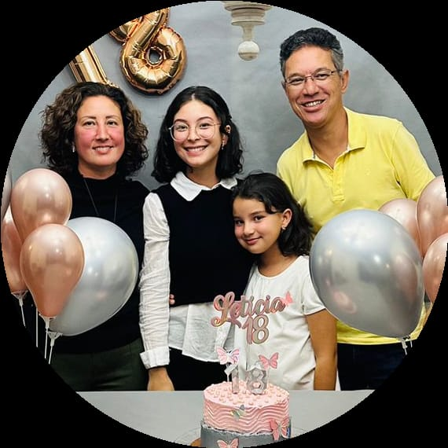
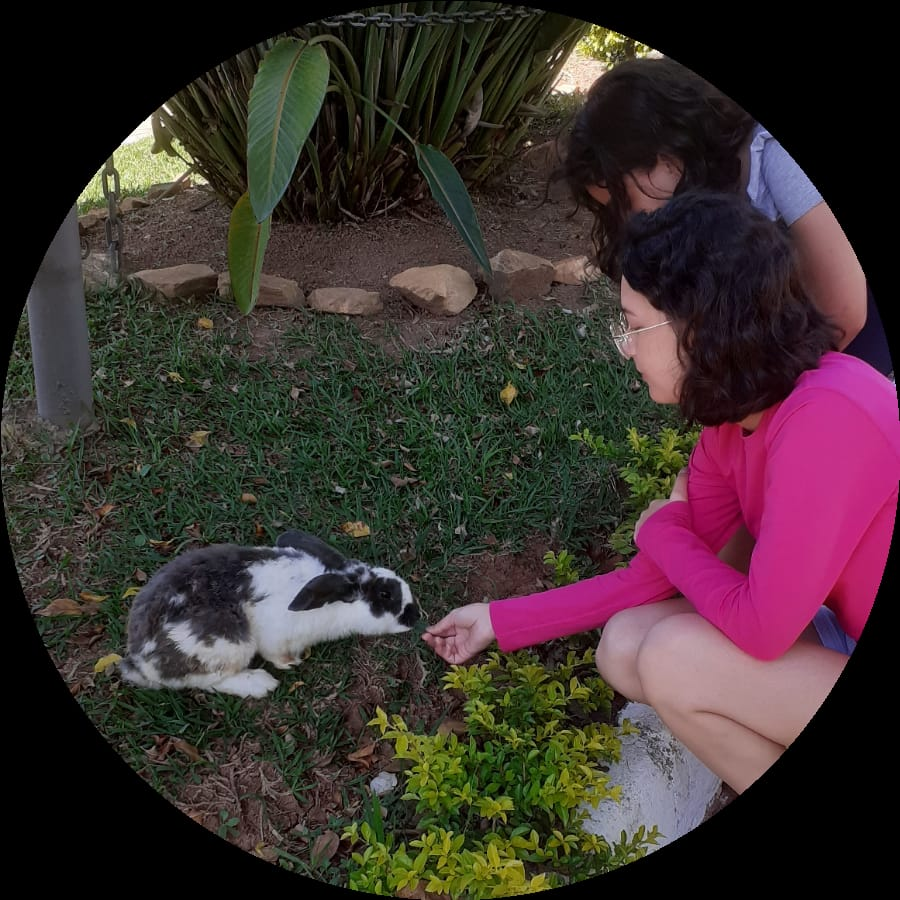
 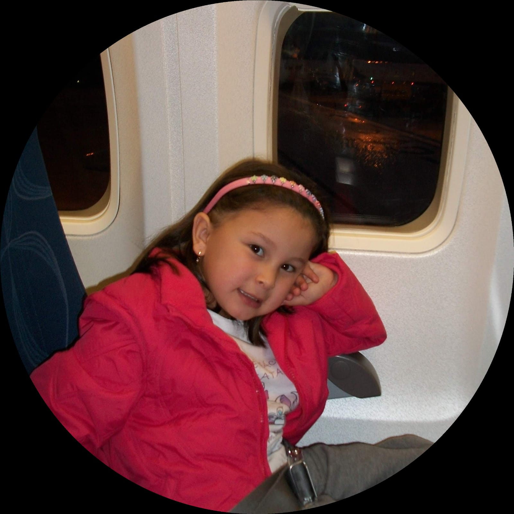
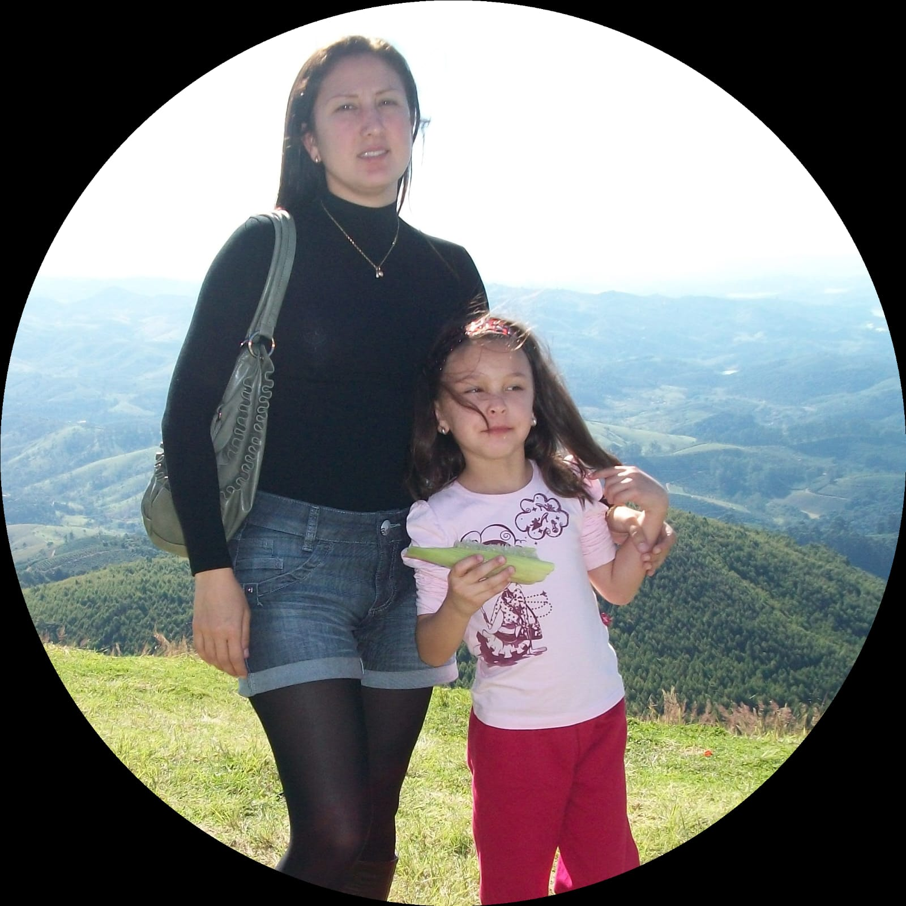
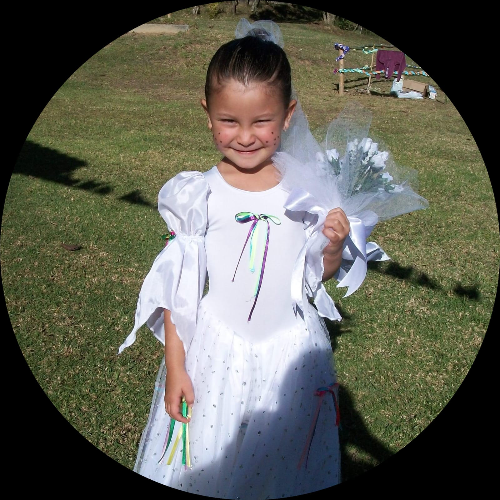
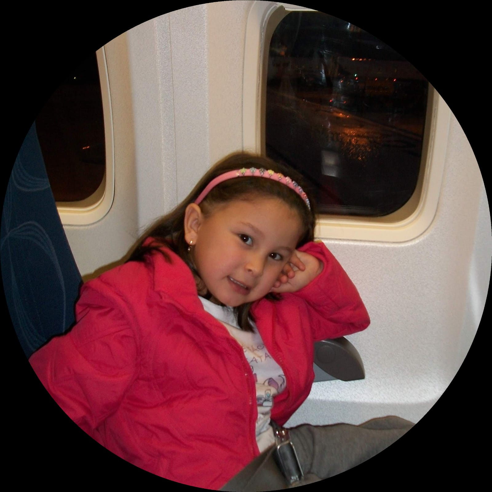
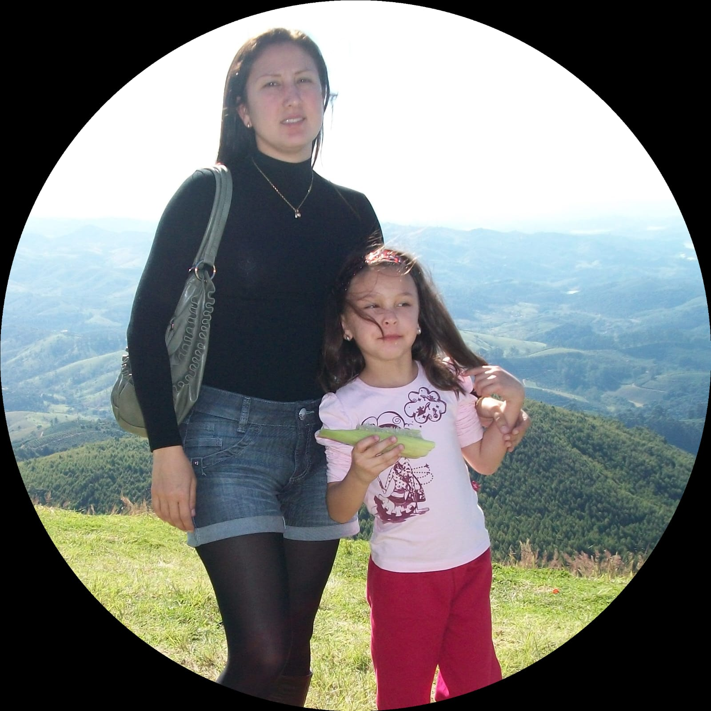
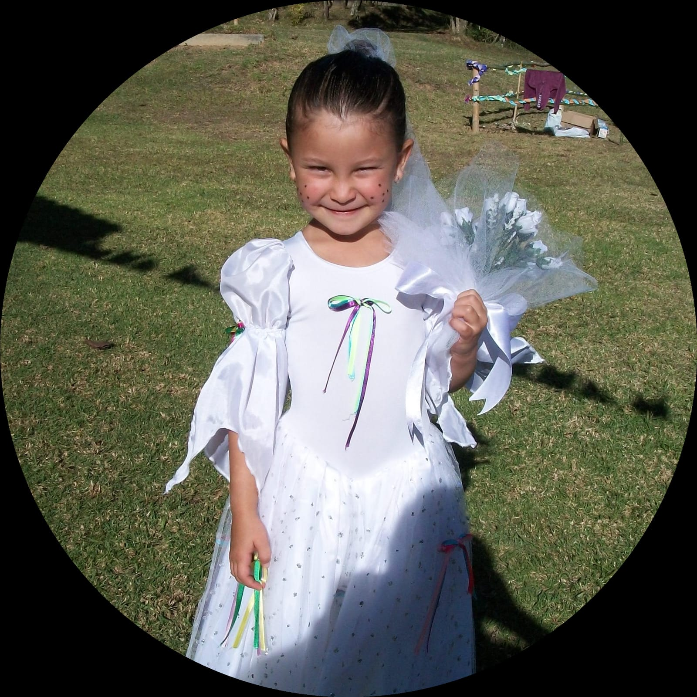
>
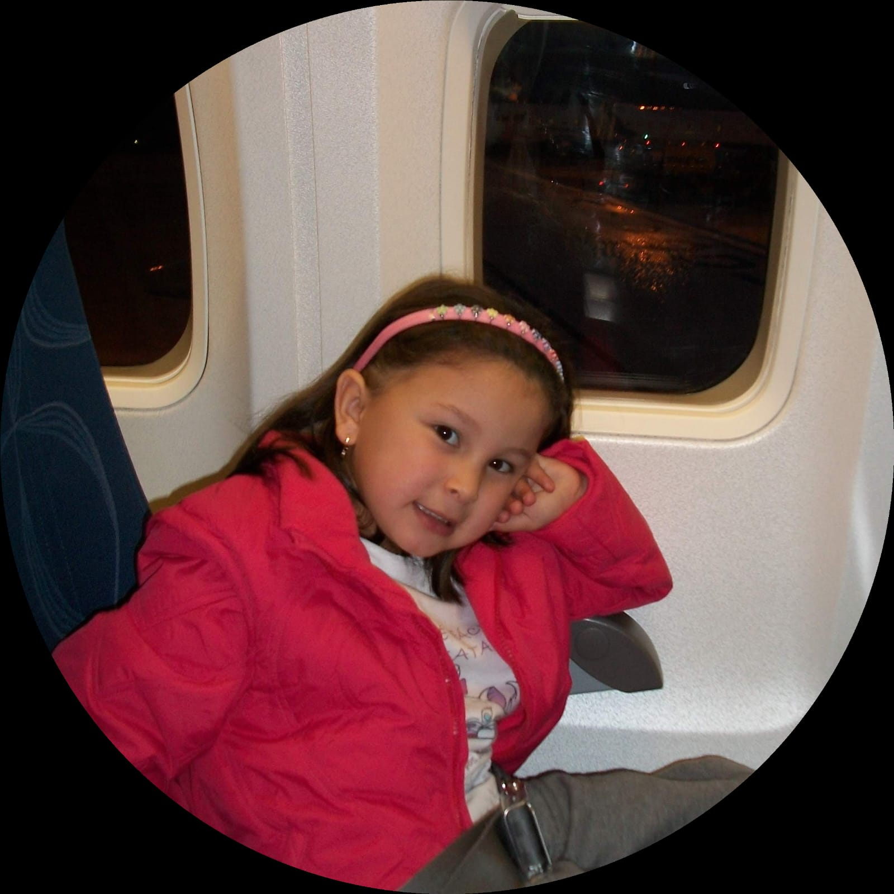
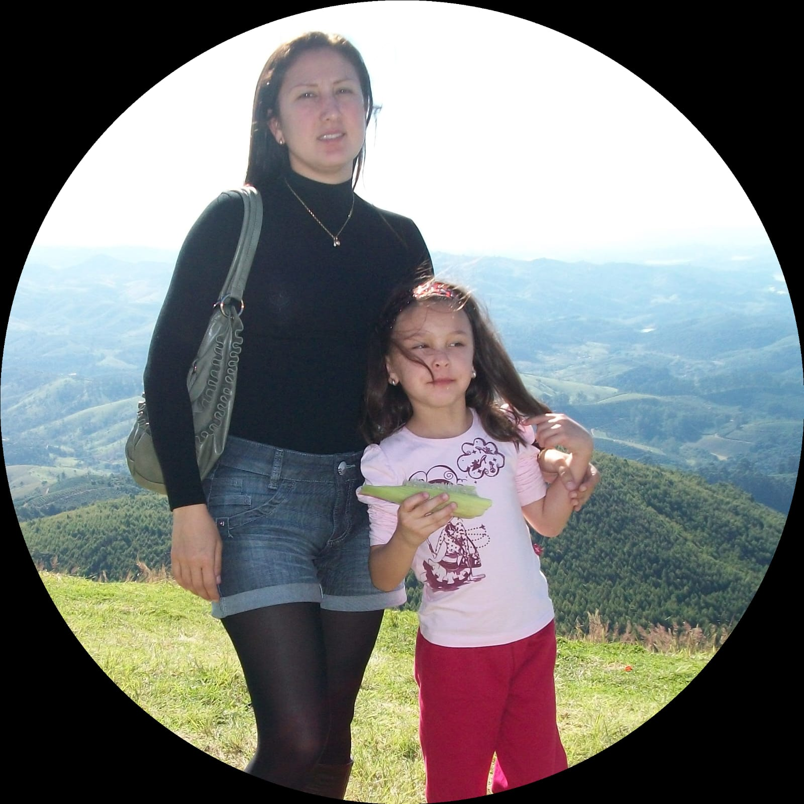
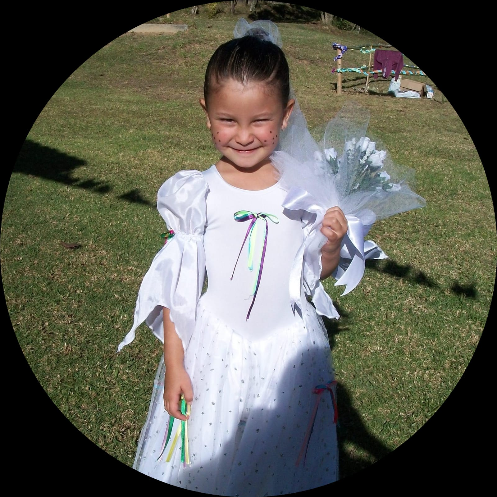
Letícia, uma menina de 18 anos completamente apaixonada por desafios e inovações. Sempre que possível estarei tentando descobrir uma nova música para tocar no piano ou um novo cubo mágico para montar. Assim como grande parte da população, sou fascinada por filmes de ficção e aventuras espaciais, sendo por essa razão, uma das minhas séries favoritas "Perdidos no Espaço". A partir desse ponto resolvi que me graduaria em Engenharia Aeroespacial, porém ao pesquisar mais sobre o curso e "amadurecer" a ideia, percebi que não era exatamente o que eu queria, e então escuto sobre o curso de Ciência da Computação e suas diversas áreas, que são muito promissoras e variadas. Ao meu ver, não existe nenhum curso além desse, com essas características. Aliando todos esses fatores à minha paixão pela lógica e quebra-cabeças, cheguei a conclusão de que Ciência da Computação seria uma ótima escolha a se fazer.
- Fabiano
Aulas onde aprendemos um pouco da história da Ciência da Computação, além de outros fundamentos essenciais que serão utilizados durante o curso e a vida profissional
- Celso
Aulas muito satisfatórias, nas quais temos a oportunidade de escrever um código e logo ver a sua aplicação no mundo real.
- João Benedito
Assim que começamos o curso, fomos apresentados à linguagem C, uma linguagem de nível intermediário, que combina os elementos das linguagens de alto nível com o funcionalismo da linguagem de nível de máquina, e que pode ser utilizada em diversas situações.
- Boca
Trata-se de aulas que visam explicar como a faculdade funciona e guiar os alunos de uma forma mais tranquila durante o curso. Tenho me sentido muito motivada e animada com as explicações e oportunidades que nos são apresentadas em suas aulas, algo muito importante nesse momento de tantas expectativas e inseguranças.
- Delboni
Muitas controvérsias rondam essa matéria. Desde seu surgimento veio criando mitos e seres mitológicos. Gosto de pensar que é um desafio e uma grande aventura com muitos altos e baixos.
Feito por:
Letícia Vicente Teodoro